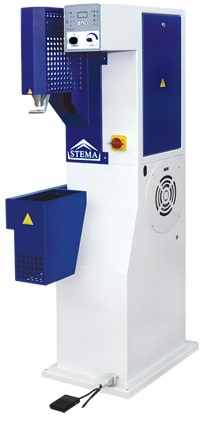

Wycinarki ramienne |
Wycinarki hydrauliczne służą do wycinania elementów za pomocą metalowego wykrojnika. Elementy mogą być wycinane z materiałów typu: skóra, syntetyk, tektura, pianka, korek, folia, aluminium do grubości 1 mm, itp. Maszyny nazywane również jako: sztanca, wykrawarka, siekarka, prasa. |
Więcej | |
Wycinarki mostowe |
Wycinarki hydrauliczne służą do wycinania elementów za pomocą metalowego wykrojnika. Elementy mogą być wycinane z materiałów typu: skóra, syntetyk, tektura, pianka, korek, folia, aluminium do grubości 1 mm, itp. Dzięki dużym gabarytom stołu roboczego możemy ciąć materiał bezpośrednio z rolki lub z arkuszy co zdecydowanie przyśpiesza prace. |
||
Ścieniarki brzegu |
Ścieniarka brzegów to prosta maszyna służąca do ścieniania obrzeży skór, materiałów skóropodobnych oraz gąbki. Dzięki swojej prostej budowie maszyna nie sprawia większych kłopotów z regulacją oraz z użytkowaniem podczas codziennych prac. |
Więcej | |
Stemlpowarki - Złociarki - Hot print - Hot Stamping |
Stemplowarka służy do oznaczania elementów ze skóry, materiałów skóropodobnych, papieru, drewna, gumy za pomocą ciepłego stempla z wygrawerowanym logo. Dzięki zastosowaniu foli koloryzującej wytłoczone logo może posiadać dowolny kolor. Maszyna nazywana również jako złociarka, hot print, hot stamping. |
Więcej | |
Obcinarki |
Obcinarki to maszny słuzące do obcinania nadmiaru materiału zarówno z skóry, materiałów syntentycznych jak i z PVC, TR, PU. |
Więcej | |
|  | Dmuchawy gorącego powietrza |
Dmuchawa gorącego powietrza z podawaniem pary służy do wygładzania fałd na obuwiu, które nazute jest na kopyto. Za pomocą gorącego powietrza oraz pary skóra staje się elastyczna i poddaje się czynnością naciągania i kształowania. |
Więcej |
Parzaki cholewek |
Parzak służy do zmiękczania cholewki za pomocą pary. Rozróżniamy parzaki: grawitacyjne, szczękowe, kominowe, do samej piety, dla całej cholewki. |
Więcej | |
Podnoskarki |
Podnoskarki to maszyny wykorzystywane do wklejania podnosków w cholewkach. Dzięki regulacji temperatury, czasu oraz siły docisku można wklejać na nich różnego rodzaju termoplastyczne podnoski bez względu na rodzaj materiału wykorzystywany przy produkcji cholewek. |
Więcej | |
Żelazka retuszerskie |
Małe i zgrabne urządzenie, które można swobodnie przenosić. Głównym zadaniem żelazek retuszerskich jest wygładzanie fałd na skórze, ale dzięki wbudowanej regulacji temperatury urządzenia te mogą być również stosowane do robienia przypaleń lub efektów przecierania. |
Więcej | |
Wytłaczarki |
Wytłaczarki to maszyny hydrauliczne służące do wytłaczania, perforowania lub stemplowania elementów skórzanych o rozmiarach nawet do 750x600 mm. W zależności od modelu maszyny mogą być wyposażone w płyte grzejną, oprzyrządowanie do przewijania folii, regulacje skoku siłownika. |
Więcej |